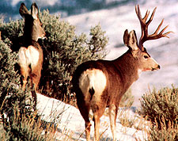
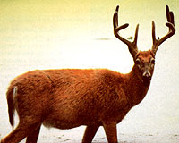
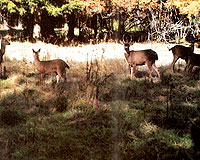
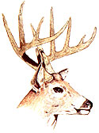

North American Deer: Mule, Whitetail And Coastal Blacktail Deer
Guide to the types of deer in our continent, including whitetail, blacktail, mule, antlers and racks.
By David Petersen
November/December 1985
There are only two species of native North American deer (they do occasionally interbreed): whitetail (Odocoileus virginianus) and mule deer (Odocoileus hemionus). A third group, the Pacific coastal (or Columbia) blacktail (O. h. columbianus), is simply a regional variation of the mule deer with enough individuality to be considered a legitimate subspecies. Other offshoots of the two primary species include the Sitka deer of Alaska (O. h. sitkensis), a close relative of the blacktail (and consequently of the muley), and two diminutive cousins to the whitetail: the Coues deer (O. v. covesi) of the American Southwest and the Florida Key deer (O. v. clavium).
Deer are mysterious and ancient creatures, their ancestors having first appeared in Mongolia during the Miocene and Pliocene geological epochs, some 10 to 20 million years ago. From there they spread to populate most of Asia and Europe, eventually crossing the Alaskan land bridge to North America. Once here, deer continued evolving until-a mere million years or so ago, during the Pleistocene epoch-they attained the form we're familiar with today.
Scientists have estimated that, before the arrival of Europeans, North America supported some 40 million whitetail and 10 million mule deer. But by 1908-because of unregulated hunting with modern firearms and the mass slaughter, especially in the West, of millions of deer for their hides alone (which were valued at as little as a dollar each)-North America's deer population had plummeted to a scant half million, and that figure represented the total of all species.
However, through the last-minute implementation of laws limiting the annual deer kill, the encroaching extinction was checked. During the past half century, as a result of the establishment of wildlife control programs that favor game species, our deer population has increased to the point where-according to the latest estimates of the Wildlife Management Institute of Washington, D.C.-the United States (including Alaska and Hawaii) now supports from 12.5 to 14 million whitetail, and 4.5 to 7 million mule deer.
Whitetail deer are most abundant in the eastern U.S., though none of the contiguous 48 states are totally devoid of the animal, and the only states lacking viable populations are California, Nevada, and Utah. In conjunction with its abundance, the whitetail's ability and willingness to live near human population centers make it the most commonly sighted (and photographed, and hunted, and run over) large wild mammal we have.
O. virginianus rarely exceeds 42 inches in height at the shoulders, with 36 to 40 inches being common. Its length (nose to tip of tail) runs from 60 to 75 inches or so, with live weight averaging around 150 pounds. (The largest whitetail buck on record pegged the scales at 425 pounds.) Coloration varies according to geography, as well as by season, with most whitetails showing a reddish brown pelage in summer, then changing to a much heavier gray-brown or even bluish coat for winter.
The whitetail's most striking physical characteristic, however, is the one from which it takes its name. Though the tail of O. virginianus is brown on top with a dark stripe down its center, the underside is as pure a white as occurs in nature. When the tail is held tightly against the rump, little if any white is visible, and the animal remains well camouflaged. But when the tail is erected to expose its snowy underside (and reveal a small white rump patch), we see the conspicuous "white flag" for which this species is famous.
The antlers of the whitetail have all of their tines, or points, sprouting from the two main beams. By contrast, a mule deer buck's antlers are bifurcated-that is, each of the two main beams forks into two smaller beams, each of those forks into two more, and so on.
The mule deer is the largest of the Odocoileus genus, standing, on the average, 40 to 42 inches at the shoulders and stretching 80 inches or so nose to tail. An adult buck will weigh from 150 to 300 pounds on the hoof, with does averaging 100 to 175 pounds. The occasional trophy-sized mule deer buck may weigh a whopping 450 pounds.
Mule deer wear a heavy coat of gray-brown to blue-gray in winter, molting to a much thinner, tawny pelage for the summer months. The facial markings are similar to those of the whitetail, though the muzzle is more elongated. The tail is white with a black tip, but smaller and more rounded than that of the whitetail. And while the whitetail got its name from its going-away end, the muley's moniker hails from an anterior peculiarity . . . ears that can be nearly a foot long. (I've actually heard of an overzealous hunter who, in a thick fog and the excitement of the moment, mistook a mule deer doe's ears for the spike antlers of a young buck-much to the eventual horror of both parties.)
The mule deer is a creature of the American West, enjoying a range that extends from southeastern Alaska well down into Mexico, and from the Pacific coast eastward to a northsouth line angling from Hudson Bay in Canada down through the middle of Texas.
Unlike whitetails, which "yard up" (gather together) for the winter on a portion of the same range they occupy in summer, mule deer often migrate from their summertime mountain-meadow haunts down to the more hospitable timbered valleys and snowless plains for winter, where browse and cover are easier to come by.
The coastal blacktail deer is surrounded by confusion-most of which arises from the longstanding practice of using the terms blacktail and mule deer interchangeably. Technically, the only deer that can properly be called a blacktail is the Pacific coastal blacktail, which, as its name indicates, occupies a thin strip of coastal forest (and a few offshore islands) extending from Alaska south into the northern half of California.
In physical characteristics, think of a small muley and you've (almost) got the blacktail. Adults stand 36 to 38 inches at the shoulders, measure 60 inches or so nose to tail, and weigh about 150 pounds-though recordbook blacktail bucks of near 300 pounds are not unknown. And while the muley's tail is narrow and white at the top and black only at the tip, the blacktail's flag is broad and dark brown at the root, going to black across the lower half. Another characteristic the coastal blacktail and the mule deer share-and a way in which they both differ noticeably from the white-tailis style of locomotion. While the whitetail runs by pushing off alternately with its front and rear legs in long, graceful bounds, blacktails and mule deer typically launch themselves with all four legs at once in bouncing, pogo-stick jumps that verge on the comical- boing, boing -each bound gaining as much altitude as forward distance.
But differences in species aside, deer are deer. All have keen senses of smell, hearing, and vision (in that order). All prefer to browse when they can, but graze when they must, consuming soft vegetation in summer, while relying primarily on brush in winter. All are ruminants-meaning that they have multicompartmented stomachs and chew cud. And all breed in fall and early winter, giving birth to their young from late spring through early summer . . . which brings us back to that strangely emboldened mule deer doe my friend and I were playing stare-down with.
All About Deer Antlers
Although the terms are often used interchangeably, there are several significant differences between antler and horn. The most apparent, of course, is inform: Horns are composed of single beams (though they often curl and twist into odd shapes), whereas antlers are branched and multitined, often taking on bizarre and complex patterns. Some species (such as moose and caribou) have antlers that are palmate: broad and flat, resembling massive hands with the fingers spread.
Another significant difference in these two types of mammalian headgear is that antlers are deciduous-that is, they're shed and replaced annually-while horns are permanent. (The single, striking exception to this rule is the pronghorn antelope-Antilocapra americana-which sheds the outer sheath of its horns annually, but retains a living, bony matrix around which a new sheath forms.)
And, finally, antlers grow from their tips and are composed of solid bone . . . while horn is a mass of hardened epidermal tissue (keratin) that grows from its base in concentric cones that push up and out, one beneath the other.
Antler growth is timed to coincide with the annual mating season. The cycle begins in midwinter, when last season's antlers-now useless-are shed leaving the buck to go bareheaded for a couple of months before the new season's growth begins. Starting in early spring and continuing through midsummer, the new antlers develop. At this point they're composed of living cells nourished and protected--by a venous, skinlike covering called velvet. By late summer, with mating season just around the corner, the velvet begins to die, dry, and peel away from the hardening antlers-a process the buck speeds along by rubbing his rack against flexible saplings, then honing the tips to rapierlike sharpness on soft-barked trees.
This scrubbing and honing behavior also enables the buck to "learn" his antlers-that is, to get a sense of how large they are and their exact shape-so that he'll be better prepared to maneuver them through the woods at a dead run, show them off to the ladies and rival suitors, and-if necessary-employ them effectively in combat. By the arrival of mating season-roughly. mid-September through November-the antlers are hard, resilient, stone-dead bone. . . peeled, polished, and ready for action.
We were angling up a gently sloping Rocky Mountainside grown waist high in gambel oak when materialized, silent as an illusion, a few yards ahead. Her face was delicate and perfect, set with huge dark eyes that showed not a trace of fear. After perhaps a minute (each second passed like an hour), the little doe snorted, danced off a few paces, then stopped, turned broadside, and looked anxiously our way-like Lassie trying to tell little Timmy to follow.
Twice we took tentative steps toward her, and twice she eased off just far enough to maintain her distance-then stopped turned, and gave us another of her coy, come-hither looks.
But before we could make any sense of thedoe's strange behavior, the mystery solved itself . . . for there in front of us, just a few feet from where the deer had first appeared from out of the tangle of oak brush, lay a quivering bundle of white-spotted red.
Now it became clear: The little doe was purposely exposing herself to great potential danger in a bold attempt to lure us away from her fawn. (At that extremely close range, and standing stock still and broadside as she was, Momma Muley would have been sure meat for a shootist, an easy bag for a bowman, and not even too much of a challenge for an Anasazi Indian with an atlatl.) It was a heroic gesture, made by one of nature's most timid creatures.
While I love the quaking aspen forests and the high, hidden places of the rugged mountains in which I live, it's the deer and elk and bear that lend the wilderness its surreal enchantment. Take away those grand elusive creatures, and . . . At any rate, with the mystery solved, my friend and I quietly backtracked away from the brave little doe and her oak-brush nurser-your hearts light, our day's problems (and there had been many) forgotten.
Nature can do that.
|
 MOTHER EARTH NEWS STAFF North American mule deer in the snow. |
 MOTHER EARTH NEWS Whitetail deer |
 MOTHER EARTH NEWS Blacktail deer |
 MOTHER EARTH NEWS Mule deer |
 MOTHER EARTH NEWS Whitetail deer |
|